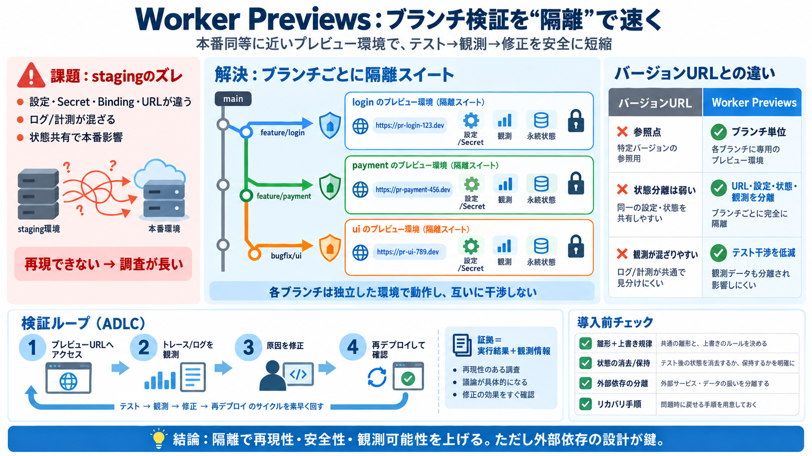

Resources and isolation · Cloudflare Workers docs
``` # Set this to today's date # Set this to today's datecompatibility_date = "2026-09-22"compatibility_date = "2026-09-…

``` # Set this to today's date # Set this to today's datecompatibility_date = "2026-09-22"compatibility_date = "2026-09-…
Every time npx wrangler preview runs, Cloudflare automatically creates a new Durable Object namespace and Container appl…
ServerlessWorkers ArchitectureDevelopersProduct NewsServerlessWorkers September 22, 2026 # Introducing Worker Previews…
Preview URLs are not generated for Workers that implement a Durable Object, including Containers and Sandbox Workers. Fo…
Durable Objects aren't just durable, they're fast: a 10x speedup for Cloudflare Queues ↗ Behind the scenes with Stream …